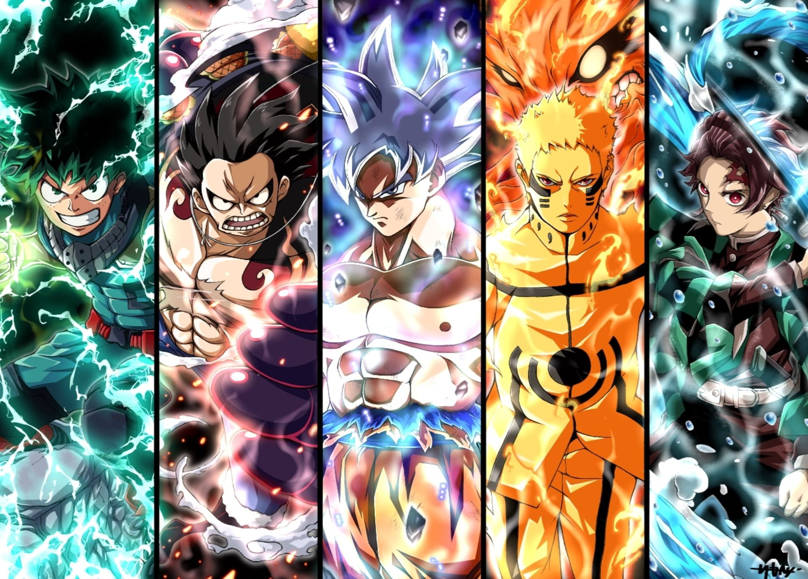

Anime Heaven

Top search: Solo Leveling, Dandadan, Blue Lock, One Piece, Solo Leveling: Specials, Bleach: Thousand-Year Blood War - The Conflict, Shangri-La Frontier Season 2, Blue Lock Season 2, Dragon Ball Daima, Frieren: Beyond Journey's End.
Top search: Solo Leveling, Dandadan, Blue Lock, One Piece, Solo Leveling: Specials, Bleach: Thousand-Year Blood War - The Conflict, Shangri-La Frontier Season 2, Blue Lock Season 2, Dragon Ball Daima, Frieren: Beyond Journey's End.
Do you know that according to Google, the monthly search volume for anime related topics is up to over 1 Billion times? Anime is famous worldwide and it is no wonder we've seen a sharp rise in the number of free anime streaming sites. Just like free online movie streaming sites, anime watching sites are not created equally, some are better than the rest, so we've decided to build Anime Heaven.to to be one of the best free anime streaming site for all anime fans on the world.
Anime Heaven.to is a free site to watch anime and you can even download subbed or dubbed anime in ultra HD quality without any registration or payment. By having only one ads in all kinds, we are trying to make it the safest site for free anime.
Yes we are, we do have only one Ads to cover the server cost and we keep scanning the ads 24/7 to make sure all are clean, If you find any ads that is suspicious, please forward us the info and we will remove it.
Before building Anime Heaven.to, we've checked many other free anime sites, and learnt from them. We only keep the good things and remove all the bad things from all the competitors, to put it in our Anime Heaven website. Let's see how we're so confident about being the best site for anime streaming:
So if you're looking for a trustworthy and safe site for your Anime streaming, let's give Anime Heaven.to a try. And if you like us, please help us to spread the words and do not forget to bookmark our site.
Thank You!